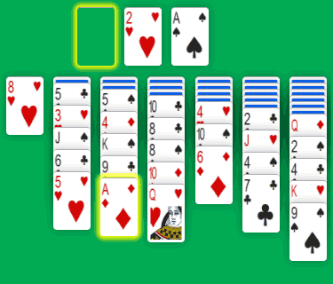

Solitaire / Free Yukon Solitaire
In March, I released my seventh game: Yukon Solitaire. It's a rather complex solitaire that become easy to play with some practice. Yukon is a close cousin of Klondike Solitaire, so it wasn't difficult for me to create this game.
Like all Solitaire-Play games, Yukon use a single deck of 52 playing cards. The layout of the game is similar to Klondike, except you have to deal all cards at the start, leaving no deck or Stock.
After shuffling the deck, deal 28 cards the same way as Klondike to make a Tableau with seven stacks. The first stack get one face up card, the second get 2 cards (one face down and one face up), the third get 3 cards (two face down and one face up). The seventh pile ends with 7 cards: 6 face down and the last face up. Deal the remaining 24 cards face up onto columns 2 to 7, by adding 4 cards to each one.
Like most solitaires, the object of Yukon is to move all the cards from the Tableau onto four Foundations. With Solitaire-Play, these are the four stack at the top of the screen. When playing with a real deck of cards, it's better to place them on the side. You start Foundations with an Ace upon which the suits will build in sequence, from Ace to King.
To play a Tableau card up to its Foundation, the card has to be completely uncovered, i.e. the top card of the stack.

For example, you can start a Foundation by moving the Ace of diamonds from column 3 to the Foundation. But you can't move the 2 of spades in the last column to the Foundation as there are 3 cards on top of it.
Like with Klondike Solitaire, Tableau cards are playable from one stack to another. You can move one card at a time or a group of several cards together.
Any face up card of a stack can be placed below another card, provided three conditions:
- The destination has to be the top card of its pile.
- The two cards must be built in alternate colors.
- The moved card is one lesser in rank than the destination.
Following this rules, a Ten of hearts can be added to the Jack of clubs or the Jack of Spades. And a black 5 can go on top of any red 6.

In this example, the 4 of spades in the last column can be built to the 5 of hearts in the second pile.
As you see, you can play any face up card in the Tableau, even if there are several cards below and they are not ordered in sequence. All the covering cards are moved as a group.
After any move, if a face down card becomes uncovered, it is flipped face up. And when one Tableau column becomes empty, it can only be used to place a King, or a group of cards starting with a King.
When there is no more possible move, the game is over. Sometimes, there are available moves, and in fact you end up in a loop. Thus the game is over too... But when you succeed to build all cards from Ace to King in Foundations, you win! You should win about 1 in 4 games. Note that with concentration and practice the best players are known to win about 75% of the time.
Yukon is a great variation to the classic Klondike Solitaire. If you like playing Klondike, you will probably enjoy Yukon Solitaire. It's a very challenging and addictive game. You need to play a lot to learn some basic strategy and increase your skill.
To get started, you need to know that it's important to expose face down cards as soon as possible. It also helps to build Foundations as you get Aces.
Solitaire-Play games come with undos, hints and automatic moves. And you can play Yukon Solitaire for free on desktop, tablet and phone...
Michel (2018/04/10)